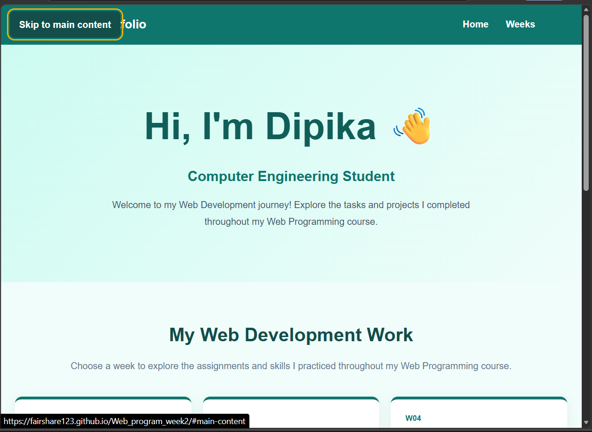

Accessibility Task
I found and fixed three accessibility problems on my portfolio homepage. One was found by Lighthouse and two were found by testing the page with only my keyboard.
Three problems and how I fixed them
1. No main landmark
What was wrong: Lighthouse reported "Document does not have a main landmark." Screen reader users use landmarks to jump straight to the main content, but my page had no <main> element.
What I changed: I wrapped the introduction and the weekly assignments in a <main> element. The navigation and footer stay outside it.
<main id="main-content" tabindex="-1">
<!-- hero section and weekly assignments -->
</main>2. "Back to Weeks" did not work with a keyboard
What was wrong: "← Back to Weeks" was a <div> with an onclick. A div cannot be reached with the Tab key, so keyboard users could not use it.
What I changed: I changed every one of them to a real <button> element. Buttons can be reached with Tab and pressed with Enter or Space. CSS keeps the same look.
<!-- Before -->
<div class="back" onclick="hideWeeks()">← Back to Weeks</div>
<!-- After -->
<button type="button" class="back" onclick="hideWeeks()">← Back to Weeks</button>3. Keyboard focus got lost when opening a week
What was wrong: When I opened a week with the keyboard, the page scrolled down to the tasks, but the keyboard focus stayed on the card at the top. Screen readers were also not told whether a week was open.
What I changed: My JavaScript now moves focus to the opened week's heading, and "Back to Weeks" returns focus to the card I opened. Each week card also has aria-expanded, which tells screen readers whether its tasks are open.
<button class="week-button" onclick="showWeek('week7')"
aria-controls="week7" aria-expanded="false">
// in showWeek(): move focus to the opened week's heading
const heading = selectedWeek.querySelector("h2");
heading.setAttribute("tabindex", "-1");
heading.focus({ preventScroll: true });After these fixes, the Lighthouse accessibility score went from 96 to 100.
Skip-to-content test
I also added a "Skip to main content" link. It is hidden until a keyboard user presses Tab, so it does not change the design.
<a class="skip-link" href="#main-content">Skip to main content</a>How I tested it on the live site in Microsoft Edge on November 18, 2026:
- Opened the homepage and pressed Tab once. The "Skip to main content" link appeared at the top left.
- Pressed Enter. The page jumped past the navigation to the main content, and the address changed to end with
#main-content. - Kept pressing Tab to open Week 7, move through its tasks and press "Back to Weeks." Every step worked without a mouse.
I did not test with a screen reader, so this test covers keyboard use only.
